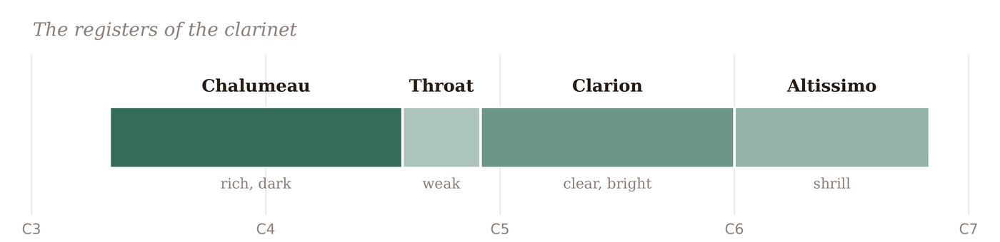

Chapter 31 told you an instrument’s range — the lowest and highest notes it can play. But writing merely “in range” is not the same as writing well for an instrument, any more than staying inside the lines is the same as drawing. A range is not uniform: it has regions, each with its own colour, strength, and difficulty, and a note that is technically playable may be weak, strained, or ugly where it sits. This chapter is about idiomatic writing — putting each line in the part of the range where the instrument sounds its best — and about the handful of beginner mistakes that make experienced players wince.
33.1Every range has regions
An instrument’s compass divides into registers, and they are not equal. Typically there is a low region that is rich but sometimes weak or unwieldy, a middle region that is the comfortable, singing heart of the instrument — its sweet spot — and a high region that is brilliant and exciting but tiring and risky. Some instruments have more sharply defined registers than others; the clarinet is the classic case, with four distinct ones that even have names:

The clarinet in Figure 33.1 makes vivid what is true, to some degree, of every instrument: where you write a note matters as much as which note it is. A melody in the clarion register sings; the identical melody down in the throat register sounds veiled and feeble. Knowing an instrument means knowing its regions.
33.2The registers of the common instruments
A quick tour of where the main instruments sound their best — the middle of each is the safe home, so these are the characterful extremes worth knowing:
- Violin — warm and rich on its low strings, brilliant and singing in the middle and upper-middle (its glory), thin and piercing at the very top.
- Cello — sonorous and deep at the bottom, but famously eloquent in its high register, where it sings like a tenor voice; one of the most expressive sounds in music.
- Flute — breathy and weak at the very bottom, mellow and cool in the middle, bright and penetrating up high (and shrill at the extreme top).
- Oboe — sweetest and most expressive in its middle, its home; the extremes are awkward and best avoided.
- Clarinet — as in Figure 33.1: rich low, weak throat, clear clarion, shrill top.
- Trumpet — brilliant and powerful throughout its range; commanding, and tiring up high.
- Horn — noble and mellow in its comfortable middle; the high register is thrilling but risky, the low register dark.
- Bassoon — comic or gruff at the very bottom, warm and expressive in its tenor register — a beautiful, underused solo voice.
You do not need to memorize all of this at once, but you do need the habit of asking, for every line you write, which register am I in, and is that where I want to be?
33.3Live in the middle
The single most useful principle follows from all of the above: for everyday writing, stay in the middle of each instrument’s range. The middle register is where every instrument is most comfortable, most reliable, most in tune, and most able to play softly and expressively. The extremes — the very top and very bottom — are special effects: the brilliant high note for a climax, the dark low note for weight, used deliberately and briefly. The top is exciting but tiring and prone to cracking (especially in brass and winds); the bottom is often weak, slow to speak, or hard to control. Reserve the edges for when you truly want their particular colour, and let the ordinary music live in the sweet spot. A piece that sits comfortably in the middle will sound good even when played by amateurs; one that lives at the extremes strains even professionals.
33.4Mistakes that make players wince
A handful of beginner errors recur, and all of them come from writing for an abstract “range” instead of a real, breathing human:
- Too high, too long. A brilliant high note is thrilling; a whole page up there is exhausting and will fray. High writing must be rationed, especially for brass and winds, whose players tire.
- No room to breathe. Wind and brass players must breathe, and string players must manage their bows. An unbroken line with no rests is unplayable — leave gaps, phrase in breathable lengths, and do not forget that a lung is not a bellows.
- No rests at all. Beyond breathing, players need to rest — a part that plays continuously for minutes is fatiguing and monotonous. Silence is part of writing for players, not just for the music.
- Awkward passages. Fast runs in remote keys, tangled figurations, or leaps across a break in the instrument (like the clarinet’s throat-to-clarion break) are far harder than they look on the page. When in doubt, simpler is kinder.
- Ignoring endurance and idiom. What one player can do in a bar, a section cannot sustain for a movement. Write what a real person can play for the real duration, not what is merely notatable.
None of these is about “wrong notes”; they are about respecting the instrument and the human holding it. Music that does is a pleasure to play, and music that is a pleasure to play gets played.
33.5How to find out
You are not expected to carry all of this in your head. Lean on three resources. The range chart of Chapter 31 (and Appendix B) gives you the outer limits at a glance. MuseScore colours notes red or yellow when they stray out of, or to the edges of, an instrument’s range — an instant, if crude, warning. And your ear, with MuseScore’s playback, tells you when something sounds strained or weak, even if it is technically in range. For anything beyond the basics, the standard orchestration texts — Adler, Piston, and the others in Appendix D — give the detailed, register-by-register guidance that a whole book can, and that this chapter can only gesture toward. When you are unsure, the surest teacher of all is a player: ask one.
In MuseScore
MuseScore gives you two immediate checks on idiomatic writing — colour and sound.
- Watch the range colouring. As you enter notes, MuseScore shows them in green when comfortably in range, yellow at the difficult edges of the range, and red when outside it entirely. Yellow is a hint to reconsider; red is a note a player likely cannot manage. (Check in Concert Pitch view, Chapter 32, so the colours reflect true pitch.)
- Listen for strain. Play your line back — with MuseSounds for realism — and listen for notes that sound weak (a flute’s low register), shrill (a clarinet’s altissimo), or thin (a violin’s very top). If it sounds strained in playback, it will sound worse live.
- Give the part rests and breaths, and check by playing whether a wind or brass line ever leaves room to breathe.
Try it: enter a melody in an instrument’s comfortable middle register and play it; then shift the whole thing up an octave (Ctrl+↑) into its high register and play again, watching the notes turn yellow and then red, and listening to the tone brighten and then strain. The point where green becomes yellow is roughly where everyday writing should stop and special effects begin — and hearing that boundary, for each instrument, is what idiomatic writing is made of.